简单式的时间是个「括弧」形状，动作落在这个括弧里面。完成式的时间则是个「箭头」形状，指出「截止时间」，动作在这个截止时间之前就已经完成。因此，简单式是比较明确地说明动作发生在什么时间，完成式则没有说得那么清楚，只交代动作在什么时间之前「已经完成」、并没有详细说明到底是在什么时候发生。以下同样分成现在、过去、未来这三种时间来说明完成式。
完成式的时间是个指出截止时间的箭头，如果指出来的截止时间在过去，就该采用过去完成式，例如：
Everybody had left before she got to the station.
(在她赶到车站之前，大家都已经先走了。)
图示：
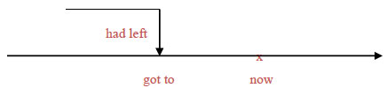
这个句子的时间由 before 引导的时间副词子句来表示。从副词子句的过去式动词 got to 可以看出时间是在过去，再从连接词 before 可以看出，这个时间副词子句表达的时间可以画成一个以过去动作 got to 为截止点的箭头。换句话说，这个时间副词子句并没有清楚交代 leave 这个动作发生在什么时候（没有一个明确的括弧如last week之类来表示），只知道这个动作在 got to 这个过去动作之前已经完成。因此主要子句的动词应该采用过去完成式 had left。再看一个例子：
More than 60,000 soldiers had been killed when the President finally decided to pull out of the war.
(当总统终于决定撤出战争时，已经有六万多名士兵阵亡。)
图示：
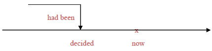
When 引导的时间副词子句中，过去式动词 decided 表示时间是在过去。从句意来揣摩，这六万多名士兵阵亡的时间应该不是「在总统下决定的那一瞬间」、而是在那之前「已经」阵亡。所以这个时间副词子句表达的时间仍然是个箭头形状、指向的截止时间是过去，所以该采用过去完成式 had been。视 had been 为动词，后面的过去分词 illed 视为形容词补语、带有被动语态，用来形容主词 more than 60,000 soldiers「被杀死」。这就是一般文法书所谓的过去完成被动态。
所有复杂的动词时态，一定牵涉到 be 动词。如果采用本书的方式，认定 be 就是动词，那么复杂的动词时态就只剩下两种：简单式（be）与完成式（have been）。再看一个例子：
The students had been preparing for the college entrance exam for three years when the Education Ministry suddenly announced a change of regulations.
(学生一直在准备大学入学考试已经准备了三年，教育部才突然宣布改变规定。)
图示：
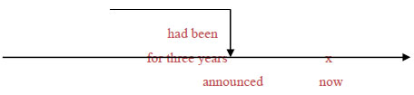
这个句子的时间副词有 for three years 这个介系词片语和 when 引导的时间副词子句。从 when 子句的过去式动词 announced 来看，时间是在过去。再从介系词片语 for three years 来看，它的时间应该是个截止箭头，表示「算到 decided 为止已经有三年」，所以动词应采过去完成式 had been。后面的现在分词 preparing 视为形容词补语，具有「进行」状态，表示这三年的时间学生「一直」都在准备。这就是一般文法书所谓的过去完成进行式。
像 for three years 或 since three years ago 之类的介系词片语，分别表示「为期有多久了」或「自从多久之前算起」，代表相同的意义：同样都用来表示「已经」有多久时间，所以通常都要采用完成式的动词。
如果上下文都没有交代或暗示截止时间为何、只说「已经完成」，那么通常都要采用现在完成式来表示。例如你告诉朋友说「那部电影我已经看过了」，话中虽然没有说明「在什么时候之前」已经看过，但是言下之意自然就是「现在以前」，所以该采用现在完成式，如下：
I have seen that movie.
换句话说：除非上下文有明言或者暗示其他的截止时间，否则完成式都应该采用现在完成式。请看几个例子：
You can’t enter now because the concert has already begun.
(你现在不能进场，因为音乐会已经开始了。)
图示：
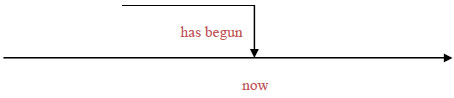
这个句子并没有明确交代音乐会是什么时候开始的，只说「已经」开始。再从主要子句的时间副词 now 来看，截止时间就是现在。换句话说，音乐会是在「现在」之前已经开始，所以该采用现在完成式。再看一个例子：
Everything that can be done has been done; now we can only wait and see.
(可以做的一切都已经做了，现在我们只能等着瞧。)
图示：
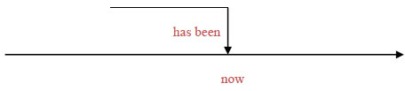
主要子句的动词采用的是be动词的现在完成式 has been，表示「到现在为止已经」（be 动词本身无意义、不须翻译），后面的过去分词 done 当形容词补语看待、表示「被做完」，形容主词 everything。这就是一般文法书所谓的现在完成被动态。
Those marathon runners have been running for two whole hours without stop now.
(那些马拉松选手目前为止已经整整跑了两个小时没有休息。)
图示：
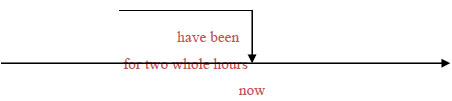
这个句子的时间副词有 now 以及介系词片语 for two whole hours，意思是「算到现在为止整整有两个小时」，很明显是一个以 now 为截止时间的箭头、应该采用现在完成式，所以动词是 have been。后面的现在分词 running 当形容词补语看待，形容主词 runners。字尾的 -ing 表示进行状态，所以 running 要解释为「一直在跑」。这就是一般文法书所谓的现在完成进行式。
完成式动词后面有没有现在分词的补语，有时候并无差别、有时候则会造成不一样的意思。请比较一下这两个句子：
I have lived here for 20 years.
I have been living here for 20 years.
(我在这（一直）住了20年了。)
图示：
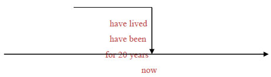
这两种讲法的意思差不多：后者用现在分词 living 当主词补语、强调「一直住」，前者没有强调，但基本上意思相同。再请比较一下这两个句子：
I have read your book.
(您的大作我拜读过了。)
I have been reading your book.
(您的大作我最近一直在看。)
图示：
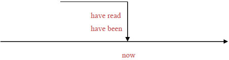
前者表示「已经看完了」，后者则强烈暗示「还在看、尚未看完」。这两种讲法就有很大的差别了。
未来完成式的时间也是一个箭头形状，唯一的差别在于它的截止时间在未来。例如：
By August I will have worked at the company for 30 years.
By August I will have been working at the company for 30 years.
(到八月为止我将在这家公司（一直）工作满30年。)
图示：
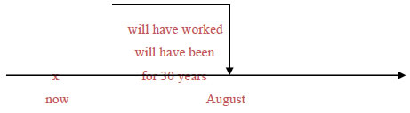
上面这两个句子相同，时间副词都是介系词片语 by August 与 for 30 years。表达的时间是「到八月为止有30年」，显然是个箭头形状、截止时间在八月（未来时间），所以该采用未来完成式。动词 will have worked 表示「将已经做满」30年。如果动词改为 will have been，意思是「将已经」有30年，后面的现在分词 working 视为形容词、当主词补语使用。字尾的 -ing 表达出进行状态、表示这30年来「一直」在此工作。后者这种说法就是一般文法书所谓的未来完成进行式。
Experts estimate that the last of our oil reserves will have been depleted by the middle of this century.
(专家估计，我们最后的石油蕴藏在本世纪中叶之前就会被用光。)
图示：
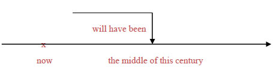
这个句子的时间副词是介系词片语 by the middle of this century。介系词 by 表示的是一个截止时间，而这个截止时间在未来，所以动词该采用未来完成式 will have been。后面的过去分词 depleted 当形容词补语看待，形容主词 the last of our oil reserves。过去分词字尾 -ed 表达出被动语态，所以 depleted 应解释为「被用完」。这就是一般文法书所谓的未来完成被动态。
In two more minutes, she will have been talking on the phone for three hours!
(再过两分钟，她讲电话就会一直讲了3小时之久。)
图示：
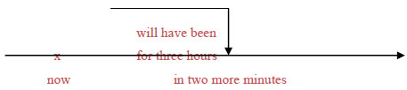
句中的介系词片语 in two more minutes「再过两分钟」指向未来时间，另一个介系词片语 for three hours「算算已经有3小时」表示一个截止的箭头，所以动词该采用未来完成式 will have been。后面的现在分词 talking 视为形容词、当主词补语来形容主词 she，字尾 -ing 表达出进行状态，意思是「一直」讲话。这就是一般文法书所谓的未来完成进行式。
Leave the test papers at the front desk when you have finished the test.
(考完式请把测验卷放在最前面的桌上。)
图示：
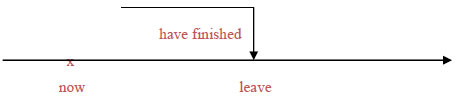
这个句子的主要子句是命令句语气，所以动词 leave 采用原形动词。 When you have finished the test 是个时间副词子句，连接词 when 是外加的从属连接词、解释为「当……时候」。所以，虽然说这句话时考试尚未考完，但是这个时间副词子句中必须「当做已经到了考完的时候」，也就是必须把截止点当做就是现在，因此动词要采用现在完成式 have finished 。一般文法书那条规则「表示时间或条件的副词子句，用现在式代替未来式」就是这个情况。上例是表示时间的副词子句，再举一个表示条件的副词子句为例：
You can leave early if you have finished the test before the bell rings.
(如果在铃响之前已经写完了测验，就可以先离开。)
图示：
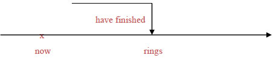
句中的 before the bell rings 是个时间副词子句，以一个截止箭头的形状修饰动词 have finished 的时间，before 是外加的连接词。说这句话时虽然铃尚未响，但是在时间副词子句中必须当做时间已经到了，所以动词要采用现在式的 rings。另外，if you have finished the test 是个表示条件的副词子句，if 是外加的从属连接词、表示「如果」。在这种副词子句中必须把假设的情况当做是真的，所以要用现在完成式 have finished 而不用未来完成式 will have finished。